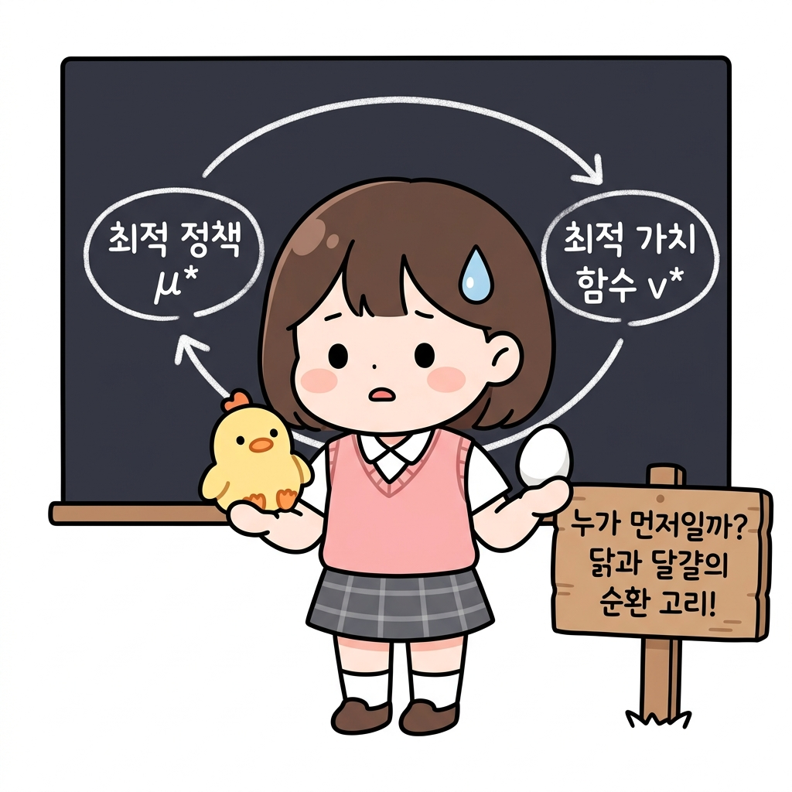
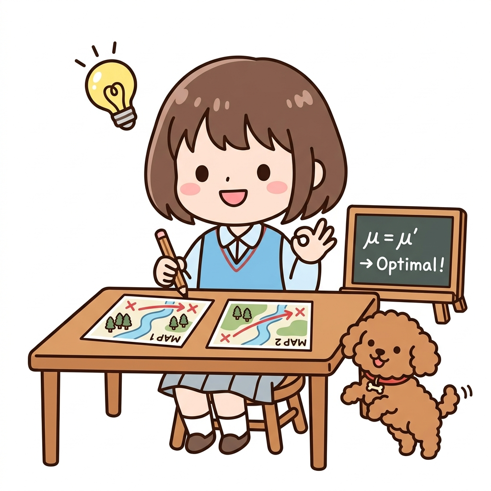
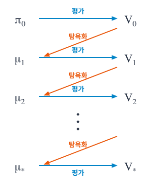
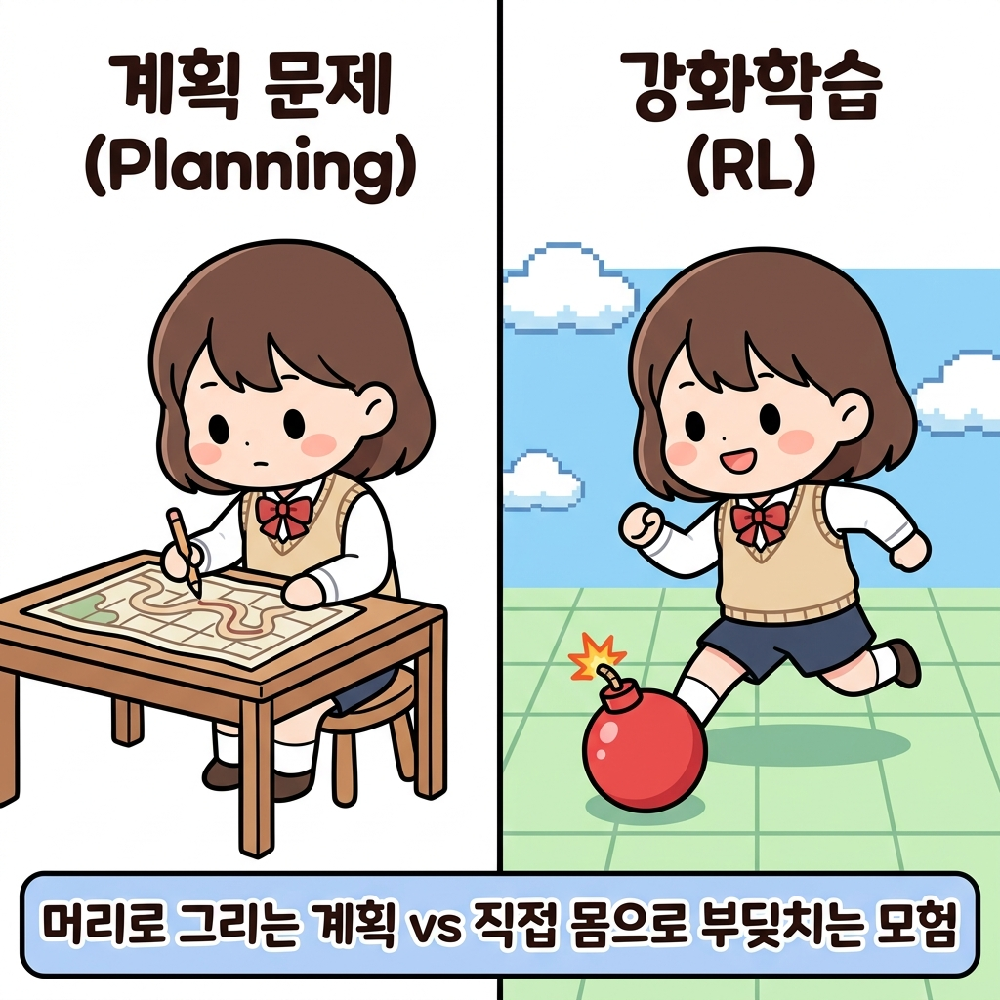

07.4 정책 반복법
언제나 최종 목표는 최적 정책 찾기입니다.
그림 07-14-0 정책 평가(Evaluation)와 정책 개선(Improvement)의 핑퐁 탁구 랠리를 이어가는 지니와 도로시
정책 반복법(Policy Iteration)은 한 번에 정답 지도를 완벽하게 구하려 욕심내지 않습니다. 그 대신, 현재 엉성한 지도의 점수를 정직하게 매기는 ‘정책 평가’와, 매겨진 점수를 보고 조금 더 좋은 방향으로 지도를 고치는 ‘정책 개선’의 두 과정을 탁구공(핑퐁)처럼 끊임없이 주거니 받거니 반복하며 결국에는 완벽한 최적 정책 지도로 수렴해 나가는 전략입니다. 지니가 열어준 핑퐁 랠리처럼 두 과정이 어떻게 주거니 받거니 엮이는지 함께 살펴볼까요?
벨만 최적 방정식을 만족하는 연립방정식을 푸는 방법도 있었습니다. 하지만 계산량이 너무 많았죠.
상태의 크기를 S, 행동의 크기를 A라고 한다면 AS만큼의 계산이 필요합니다.
그래서 문제가 조금만 복잡해져도 현실적으로는 해결할 수 없게 됩니다.
그림 07-15 상태수(S)와 행동수(A)에 따라 계산량이 폭발해 종이 더미에 묻힌 도로시
NOTE_ 벨만 최적 방정식을 직접 계산하는 방식은 비현실적인 경우가 많습니다. 그래서 첫 번째 단계로 현재의 정책을 평가합니다. 현재의 정책을 제대로 평가할 수 있다면 이를 기초로 ‘개선’할 수 있기 때문입니다.
앞 절에서는 DP를 사용하여 정책을 평가했습니다.
‘반복적 정책 평가’라는 알고리즘이었죠. 우리는 드디어 정책을 ‘평가’할 수 있게 되었습니다. 평가를 할 수 있게 되었으니 정책을 살짝 수정하여 더 나아지는지 ‘비교’하며 ‘개선’할 수도 있습니다.
이번 절에서는 정책을 개선하는 방법을 알아보겠습니다.
그림 07-16 정책 평가(Evaluation)와 정책 개선(Improvement)의 선순환 구조
💡 헷갈림 방지! 도로시의 모험 비유로 보는 강화학습 용어 사전
강화학습의 수학 기호와 개념들이 헷갈릴 때마다 아래의 모험 비유를 떠올려 보세요!
| 수학 기호 | 강화학습 용어 | 도로시의 모험 비유 | 한 줄 핵심 꿀팁 |
|---|---|---|---|
| π (파이) |
확률적 정책 (Stochastic Policy) |
“동서남북 확률이 적힌 엉성한 지도” (예: 동쪽으로 갈 확률 50%, 북쪽 50%) |
처음 시작할 때 쥐고 있는 엉뚱하고 무작위적인 첫 지도입니다. |
| μ (뮤) |
결정적 정책 (Deterministic Policy) |
“한 방향만 콕 가리키는 명확한 지도” (예: 무조건 남쪽으로 가라!) |
망설이지 않고 오직 한 행동만 100% 선택하도록 업그레이드된 지도입니다. |
| v(s) 또는 V | 상태 가치 함수 (State-Value Function) |
“각 땅에 묻힌 보물상자의 값어치” (현재 지도를 따라갔을 때 얻을 최종 기대 점수) |
특정 땅(상태 s)에 발을 디뎠을 때, 그 땅이 가진 잠재적 가치입니다. |
| q(s, a) 또는 Q | 행동 가치 함수 (Action-Value Function) |
“그 방향으로 발을 뗐을 때 받는 성적표” (상태 s에서 행동 a를 취했을 때의 점수) |
가치 함수 v는 땅의 점수이고, q는 그 땅에서 한 걸음 떼는 행동의 점수입니다. |
| R | 보상 (Reward) | “즉시 먹는 달콤한 사과” | 행동을 하자마자 환경으로부터 얻는 즉각적인 피드백입니다. |
| γ (감마) |
할인율 (Discount Factor) | “사과의 유통기한 (시간 할인)” | 먼 미래에 얻을 보물상자는 오늘 당장 얻는 사과보다 가치가 낮음을 반영합니다. |
| 평가 (Evaluation) |
정책 평가 (Policy Evaluation) |
“현재 지도를 따라갔을 때 보물상자의 진짜 점수 매기기” | 현재의 정책 지도를 바탕으로 가치 함수 V를 알아내는 단계입니다. |
| 개선 / 탐욕화 (Improvement) |
정책 개선 (Policy Improvement) |
“보물 점수를 보고, 더 점수가 높은 쪽으로 지도 고치기” | 알아낸 가치 함수 V를 토대로 더 나은 지도로 업데이트(argmax)하는 단계입니다. |
07.4.1 정책 개선
정책을 개선하는 힌트는 ‘최적 정책’에서 찾을 수 있습니다.
이번 절에서는 다음 기호를 사용하여 정책 개선 방법을 설명합니다.
• 최적 정책: μ∗(s) • 최적 정책의 상태 가치 함수: v∗(s) • 최적 정책의 행동 가치 함수(Q 함수): q∗(s, a)
그림 07-17 최적 정책 기호들의 도로시 모험 비유 (나침반, 보물상자, 사과)
복습부터 시작하겠습니다.
최적정책
3.07.2절에서 설명한 바와 같이 최적 정책 μ∗는 다음 식으로 표현됩니다.
\[\mu_*(s) = \operatorname{argmax}_a q_*(s, a) \tag{식 07.4}\] \[\mu_*(s) = \operatorname{argmax}_a \sum_{s'} p(s' \mid s, a) \{ r(s, a, s') + \gamma v_*(s') \} \tag{식 07.5}\]💡 수식 07.4에서 07.5로의 치환 과정 쉽게 이해하기
이 두 식은 전혀 다른 식이 아니라, 하나의 기호를 길게 풀어쓴(치환한) 관계입니다.
-
기호의 약속 (q∗ 정의): q∗(s, a)는 “상태 s에서 행동 a를 취했을 때 얻는 기대 점수”입니다. 이는 다음과 같이 계산됩니다. \(q_*(s, a) = \sum_{s'} p(s' \mid s, a) \{ r(s, a, s') + \gamma v_*(s') \}\) 즉, “① 이번에 즉시 얻는 보상 r“과 “② 다음 땅(s’)의 미래 가치 v∗를 시간 할인(γ)한 값”을 더한 후, “③ 다음 땅으로 갈 확률 p“를 반영하여 평균(기댓값)을 낸 것입니다.
-
치환 (대입) 과정:
[식 07.4]의 기본 형태: \(\mu_*(s) = \operatorname{argmax}_a \mathbf{q_*(s, a)}\)
행동 가치 함수의 정의 식: \(\mathbf{q_*(s, a)} = \sum_{s'} p(s' \mid s, a) \{ r(s, a, s') + \gamma v_*(s') \}\)
두 식을 합친 [식 07.5] 형태: \(\mu_*(s) = \operatorname{argmax}_a \left[ \sum_{s'} p(s' \mid s, a) \{ r(s, a, s') + \gamma v_*(s') \} \right]\)
-
argmax 연산의 적용 과정: 도로시는 사방(동서남북)을 둘러보며 각 방향으로 갈 때의 가치인 q∗(s, a)를 계산합니다. 그 후 argmax를 통해 가장 가치 점수가 높은 방향(행동)을 최종 선택합니다.
그림 07-19 기대 가치가 가장 높은 남쪽(+10)을 argmax(나침반)로 선택하는 도로시와 토토
이 식에서 최적 정책은 argmaxa 연산이 찾아줍니다.
argmax란?
- 수학적 정의: argmax는 Argument of the Maximum의 약자로, 대상 식의 값을 최대로 만드는 입력값(인자)을 찾는 연산입니다.
- 단순히 최댓값을 뜻하는 max가 “가장 큰 보상 점수 자체”를 가리킨다면, argmax는 “그 가장 큰 점수를 얻기 위한 행동(또는 방향)”을 찾아냅니다.
- 도로시와 토토의 비유:
- 도로시가 서 있는 자리에서 동, 서, 남, 북 방향을 보았더니 각각의 기대 수익이
[동: +1, 서: -5, 남: +10, 북: 0]이 나왔다고 해봅시다.- 이때
max를 계산하면 가장 높은 점수인+10이 됩니다.- 반면
argmax를 계산하면+10을 주는 행동 방향인남(South)을 가리킵니다.- 즉, argmaxa에서 아래에 붙은 a는 “가장 가치 있는 결과를 내는 행동 a를 직접 고르라”는 의미입니다.
탐욕 정책
이 연산은 국소적인 후보 중에서 최선의 행동을 선택해주죠. ‘국소적인’ 후보 중 선택한다고 해서 [식 07.4]와 [식 07.5]가 표현하는 정책을 탐욕 정책greedy policy이라고 합니다.
NOTE_ [식 07.5]를 통해 최적 가치 함수 v∗를 알면 최적 정책 μ∗를 구할 수 있습니다.
하지만 v∗를 알기 위해서는 최적 정책 μ∗가 필요합니다. ‘닭과 달걀’ 문제죠.

임의의 결정적 정책 적용
[식 07.4]는 최적 정책 μ∗에 대한 식이지만, 여기서는 ‘임의의 결정적 정책’ μ에 [식 07.4]를 다음과 같이 적용해봅시다. \(\mu'(s) = \operatorname{argmax}_a q_{\mu}(s, a) \tag{식 07.6}\)
\[\mu'(s) = \operatorname{argmax}_a \sum_{s'} p(s' \mid s, a) \{ r(s, a, s') + \gamma v_{\mu}(s') \} \tag{식 07.7}\]💡 잠깐! 왜 최적 정책(μ∗)을 설명하다가 갑자기 임의의 정책(μ)을 대입하나요?
- 최적 정책 μ∗은 우리의 ‘최종 목적지’입니다. 마치 격자 세상의 모든 보물과 위험을 통달한 ‘완벽한 보물 지도’와 같습니다. 하지만 도로시는 모험을 처음 시작하는 에이전트이므로, 이 완벽한 지도가 어디에 있는지 전혀 모르는 상태입니다.
- 임의의 정책 μ는 도로시가 현재 들고 있는 ‘엉성한 손그림 지도’입니다. 처음엔 틀린 부분도 많고 엉망인 징검다리 지도입니다.
- 징검다리 딛고 한 단계씩 올라가기: 보물 지도(μ∗)를 단번에 손에 넣는 것은 불가능하기 때문에(닭과 달걀 문제), 도로시는 현실적인 우회로를 선택합니다. 일단 자신이 가진 엉성한 지도(μ)로 한 발짝 걸어보며 정보를 수집하고(평가 vμ), 그 정보를 바탕으로 지도를 조금 더 좋은 지도(μ’)로 직접 고쳐나가는 일(개선)을 반복합니다. 즉, 엉성한 지도를 조금씩 고쳐가면서 완벽한 최적의 지도(μ∗)를 향해 한 계단씩 기어 올라가기 위해 임의의 정책 μ에 식을 대입하여 개선 과정을 설계하는 것입니다.
그림 07-20 엉성한 지도(μ)를 직접 고치며 완벽한 최적의 지도(μ*)를 동경하는 도로시
이때 각 개념을 다음 기호로 표기합니다.
• 현 상태의 정책: μ(s) • 정책 μ(s)의 상태 가치 함수: vμ(s) • 새로운 정책: μ’(s)
또한 [식 07.6] 혹은 [식 07.7]에 의한 정책 갱신을 ‘탐욕화’라고 부르기로 합시다.
특징
탐욕화된 정책 μ’(s)에는 재미난 특징이 있습니다.
모든 상태 s에서 μ(s)와 μ’(s)가 같다면(정책이 그대로라면), 정책 μ(s)는 이미 최적 정책이라는 것입니다.
왜냐하면 [식 07.6]에 의해 정책이 갱신되지 않는다면 다음 식을 만족하기 때문입니다.
\[\mu(s) = \operatorname{argmax}_a q_{\mu}(s, a)\]이 식은 최적 정책이 만족하는 식 그 자체입니다.
따라서 탐욕화를 수행해도 정책이 그대로라면, 달리 말해 모든 상태 s에서 μ’(s)가 갱신되지 않는다면 μ(s)는 이미 최적 정책이라는 뜻입니다.
💡 도로시의 ‘연필을 내려놓는 순간’ 비유로 이해하기
- 상황: 도로시가 기존 지도(μ)를 더 완벽하게 고치기 위해, 각 상태에서 기대 수익(qμ)을 다시 계산하여 지도를 고치려고(탐욕화) 연필을 쥐었습니다.
- 발견: 그런데 지도 위의 모든 갈림길에서 다음으로 가야 할 가장 좋은 길을 열심히 계산해보니, 신기하게도 기존에 지도에 그려둔 방향과 100% 똑같은 길이 나왔습니다. (즉, 새로운 지도 μ’와 기존 지도 μ가 완전히 동일함)
- 결론: 더 이상 지도를 고칠 필요가 없게 된 도로시는 웃으며 연필을 내려놓습니다. “아하! 이 지도는 이미 이 격자 세상에서 가장 완벽한 최적의 보물 지도(μ∗)였구나!” 하고 깨달은 것입니다. 이처럼 정책 갱신을 시도했음에도 정책이 전혀 변하지 않는 정지 상태에 도달했다면, 그 정책이 곧 우리가 찾던 최적 정책입니다.
그림 07-21 기존 지도(MAP 1)와 갱신된 지도(MAP 2)가 똑같음을 깨닫고 기뻐하는 도로시와 토토

그렇다면 탐욕화의 결과로 정책이 갱신되는 경우는 어떤 특징이 있을까요?
정책 μ’가 정책 μ와 달라진다면 새로운 정책은 항상 기존 정책보다 개선된다는 사실이 밝혀졌습니다.
더 구체적으로 말하면, 모든 상태 s에서 vμ’(s) ≥ vμ(s)가 성립합니다.
도로시의 지도 대조 비유로 이해하기
도로시와 토토의 모험을 통해 수식의 의미를 친근하게 풀어봅시다.
- 상황: 도로시는 현재 가지고 있는 지도인 ‘현재 정책 μ‘에 의지해 모험 중입니다. 그리고 모험의 기억들을 기록해 두어, 격자 세상의 각 위치가 가진 값어치인 ‘상태 가치 함수 vμ‘도 잘 파악해 둔 상태입니다.
- 지도의 갱신(탐욕화): 도로시가 자신이 기록해 둔 가치 함수 정보를 바탕으로 “사방을 다시 꼼꼼하게 둘러보고, 매 순간 가장 이득이 되는 방향으로 지도를 새로 고쳐 볼까?” 하고 결심합니다. 이렇게 다시 그린 새로운 지도가 바로 ‘새로운 정책 μ’‘입니다.
- 특징 ① (지도가 변하지 않을 때): 만약 새로운 지도를 꼼꼼히 그렸음에도 불구하고 기존 지도(μ)와 완벽하게 똑같다면 어떨까요? 즉, 동서남북을 다시 따져 봐도 기존에 걷던 길이 여전히 가장 최선인 경우입니다. 이는 도로시가 가진 기존 지도가 이미 더 이상 개선할 구석이 없는 완벽한 최적의 지도(μ∗)에 도달했음을 의미합니다.
- 특징 ② (지도가 변했을 때 - 정책 개선 정리): 만약 새로 그린 지도(μ’)가 기존 지도(μ)와 어딘가 달라졌다면 어떨까요? 수학적으로는 “새로 바뀐 지도(μ’)를 따라갈 때 얻는 전체 기대 보상(vμ’)이 이전 지도(μ)를 따를 때의 보상(vμ)보다 무조건 크거나 같다”는 사실이 보장됩니다. 즉, 지도를 고치면 모험은 항상 더 풍요롭고 나은 방향으로만 개선됩니다.
그림 07-18 기존 지도(Old Map)와 새로운 지도(New Map)를 대조하는 도로시와 토토
NOTE_ 이번 절에서는 [식 07.6] 혹은 [식 07.7]에 의해 정책이 개선된다는 사실만 설명하고 증명은 생략합니다. 정책이 개선된다는 수학적 근거는 정책 개선 정리policy improvement theorem에 잘 나와 있습니다. 정책 개선 정리와 증명에 대해서는 다른 문헌[5]을 참고하기 바랍니다.
지금까지의 설명을 종합하면, 정책 탐욕화의 효과를 다음과 같이 정리할 수 있습니다.
• 정책이 항상 개선된다. • 만약 정책이 개선(갱신)되지 않는다면 그 정책이 곧 최적 정책이다.
07.4.2 평가와 개선 반복
앞 절에서 탐욕화([식 07.6] 혹은 [식 07.7])로 정책을 개선할 수 있음을 알았습니다.
참고 [식 07.6] 및 [식 07.7]
\[\mu'(s) = \operatorname{argmax}_a q_{\mu}(s, a) \tag{식 07.6}\] \[\mu'(s) = \operatorname{argmax}_a \sum_{s'} p(s' \mid s, a) \{ r(s, a, s') + \gamma v_{\mu}(s') \} \tag{식 07.7}\]
상태 가치 함수
이번 절에서는 상태 가치 함수를 사용한 [식 07.7]을 기준으로 이야기를 진행하겠습니다.
또한 더 앞서 07.2.3절에서 상태 가치 함수를 평가하는 알고리즘을 구현했습니다.
이 두 가지가 최적 정책을 찾는 방법의 핵심입니다. 그 방법을 [그림 07-14]에 표현해보았습니다.
그림 07-14 정책 개선 과정

💡 [그림 07-14] 이해를 돕는 정책 반복법 용어 설명
- π (파이, Pi): 확률적 정책 지도입니다.
- 격자 세상에서 어떤 방향으로 갈지 확률(예: 동쪽 50%, 서쪽 50%)로 표기한 지도입니다. 도로시가 모험을 처음 시작할 때 쥐는 가장 엉성하고 무작위적인 첫 지도(π0)가 여기에 해당합니다.
- V (가치, Value): 가치 평가 표입니다.
- 현재 들고 있는 지도(π 혹은 μ)에 따라 걸었을 때, 각 칸이 결국 몇 점짜리 잠재력(기대 보상)을 가졌는지를 수치로 정돈해 둔 가치 표입니다. (예: 반복적 정책 평가로 얻은 가치 표 V0, V1 등)
- μ (뮤, Mu): 결정적 정책 지도입니다.
- 갈림길에서 망설이지 않고 “오직 이 방향이 제일 좋은 한 길이다!” 하고 100% 한 방향(결정적 행동)만 콕 가리키는 명확한 지도입니다.
- 첫 엉성한 지도(π0)의 가치 평가 표(V0)를 보고 더 좋은 길을 가리키도록 고치면(탐욕화), 확률적 지도가 아닌 명확한 결정적 지도(μ1)로 업그레이드됩니다.
그림의 처리 과정을 글로 정리하면 다음과 같습니다.
-
먼저 π0이라는 정책에서 시작한다. 정책 π0은 확률적일 수도 있으므로 μ0(s)가 아닌 π0(s a)로 표기한다. - 다음으로 정책 π0의 가치 함수를 평가하여 V0을 얻는다. 반복적 정책 평가 알고리즘을 이용하면 된다.
- 그리고 가치 함수 V0을 이용하여 탐욕화를 수행한다([식 07.7]을 적용하여 정책 갱신). 탐욕 정책은 언제나 하나의 행동을 선택하므로 결정적 정책인 μ1을 얻을 수 있다.
- 1~3 과정을 반복한다.
정책 반복법
이 과정을 계속하면 탐욕화를 해도 정책이 더 이상 갱신되지 않는 지점에 도달합니다. 그때의 정책이 바로 최적 정책입니다(그리고 최적 가치 함수입니다).
이렇게 평가와 개선을 반복하는 알고리즘을 정책 반복법policy iteration이라고 합니다.
NOTE_ 환경은 상태 전이 확률 p(s’ s, a)와 보상 함수 r(s, a, s’)로 표현됩니다. 강화 학습에서는 이 둘을 가리켜 ‘환경 모델’ 또는 단순히 ‘모델’이라고 합니다. 환경 모델이 알려져 있다면 에이전트는 아무런 행동 없이 가치 함수를 평가할 수 있습니다. 그리고 정책 반복법을 이용하면 최적 정책도 찾을 수 있습니다. 에이전트가 실제 행동을 하지 않고 최적 정책을 찾는 문제를 계획 문제planning problem라고 합니다.
이번 장에서 다루는 문제는 계획 문제입니다. 반면 강화 학습은 환경 모델을 알 수 없는 상황에서 수행하는 경우가 많은데, 그럴 때는 에이전트가 실제로 행동을 취해 경험 데이터를 쌓으면서 최적 정책을 찾습니다.
